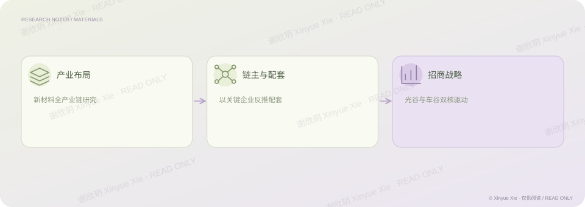

复星创富 · 投资专题研究
新材料产业链与招商研究
从产业布局，到企业引进的具体路径。
PROJECT NOTES / THE BIG PICTURE
研究思路

01研究内容
围绕武汉某区新材料全产业链布局，我梳理产业协同与招商路径，提出“光谷＋车谷”双核驱动战略，并构建“链主企业＋反向配套”招商模型。研究希望先识别能够带动产业链的关键企业，再从其上下游需求反推配套企业的引进方向。我完成了 100 余页深度研究报告，研究成果为争取数十万元专项资金提供支持。
02分析过程
梳理新材料产业链及区域协同关系，明确产业布局要解决的问题。 以链主企业为起点，从上下游需求反推配套企业的招商方向。 以“光谷＋车谷”双核驱动战略连接产业研究、招商模型与资金支持。
相关经历复星创富 · 新材料投资
商业研究
将产业或区域选择与实际进入路径相联系。
谢欣玥 Xinyue Xie · 研究作品仅供在线阅读
← 返回全部作品